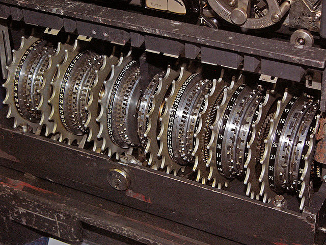

09-22-2011 5:23PM (ET)

A Gap is found: In 2009 a bug was found in the computer generated portion of the proof of the differential resistance of MD6. As I am a big fan of MD65 and it has a significant number of users in a security centric environment. I felt a strong desire to restore the proof of security.
The bug had already been fixed, but the fixed program wasn't able to quickly prove that MD6 was secure against differential attacks. When I say quickly I mean that the prover was run for long periods of time without providing a satisfactory result. If the prover could be made faster it might be possible to restore the proof of security. I was given access to the original source code and spent a good chunk of my "project time" in 2010 attempting various strategies to both speed up the prover2 and to improve the proof method.
The Problem: Differential cryptanalysis of a hash function requires finding a differential path through the hash function that has a greater than average chance of generating a collision. The proof for the differential resistance of MD6 is approximately1:
Part 1 was checked by a computer. Given a number of rounds, the program would compute the upper bound on the probability of a path surviving that number of rounds. For a larger number of rounds the program took increasing amounts of time. The program was not efficient enough to check the number of rounds we wanted to check and therefore the proof was in doubt.
Solve The Easy Stuff First: In early 2011 I met with success. My method was to break the problem into two cases: An easy case and a hard case. Then use the existing prover to find the upper bound for the differential paths which were very computationally trivial to lower bound (the easy case). To solve the hard case I developed a targeted time/exactness trade-off which efficiently upper bounded the non-trivial differential paths.
Not only did this method restore the proof of the differential resistance of MD6, but it also nearly doubled the security margin of MD6 against such attacks. The full paper is available here. The source code to replicate all the results can be found here on my github account.
Thanks: I like to thank Juniper routers for funding my trip to the Eurocrypt ECRYPT II hash function workshop to present these results and Ron Rivest and Lisa Yin for providing me with guidance and source control access.
The complete details of the original proof can be found in the MD6 report Chapter 6.9. ↩
I managed to completely parallelize the algorithm. Given $n$ computers the program was speed up by a factor of $n$. I ran it on a cluster of 100 computers for several weeks with moderate success. I choose to abandon this method of attack not just because I needed a larger cluster but also because I wanted a proof that could be replicated by anyone with a desktop computer. The value of a proof of security is that it can be repeated and checked. ↩
The method is very much one of always assuming the worst case analysis to avoid computing all the possibilities. For example the program only deals in the hamming weights of registers in MD6 rather than their actual values. ↩
A differential path with a probability so low provides no benefit over brute force aka the birthday attack. ↩
MD6 is a beautiful design. It is built out of Non-Linear Feedback Shift Registers employing 64-words and merkle-trees to take advantage of parallelism. It is a hash-function designed for a future filled with 64-bit massively parallel processors (exactly the sort of word Intel and ARM are building). ↩